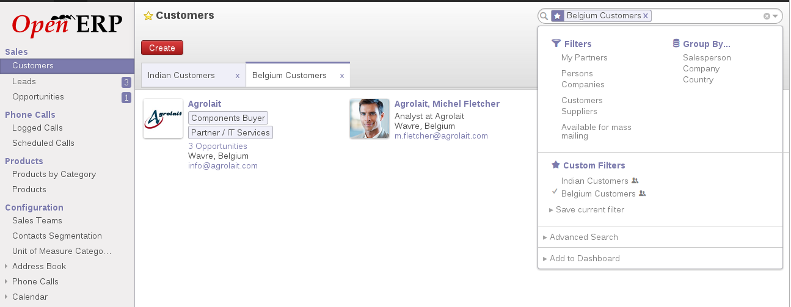

<section class="oe_container">
    <div class="oe_row oe_spaced">
        <div class="oe_span12">
            <h2 class="oe_slogan">Custom Filter Tabs</h2>
            <h3 class="oe_slogan">Converts custom filters into tabs</h3>
        </div>
        <div class="oe_span6">
            <div class="oe_demo oe_picture oe_screenshot">
                <a href="https://www.openerp.com">
                    
                </a>
                <div class="oe_demo_footer oe_centeralign">Online Demo</div>
            </div>
        </div>
        <div class="oe_span6">
            <p class="oe_mt32">
            A very convenient feature of OpenERP that can convert your custom filters into tabs to make searching easy and enhances your GUI experience.
            </p>
            <div class="oe_centeralign oe_websiteonly">
                <a href="mailto:sales@openerp.com" class="oe_button oe_big oe_tacky">Contact Us</a>
            </div>
        </div>
    </div>
</section>

